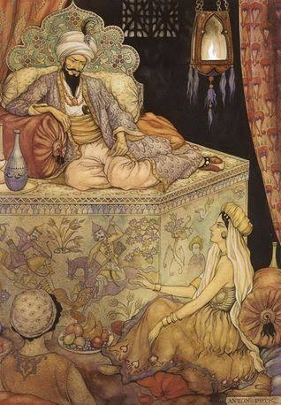
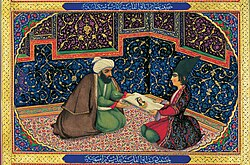
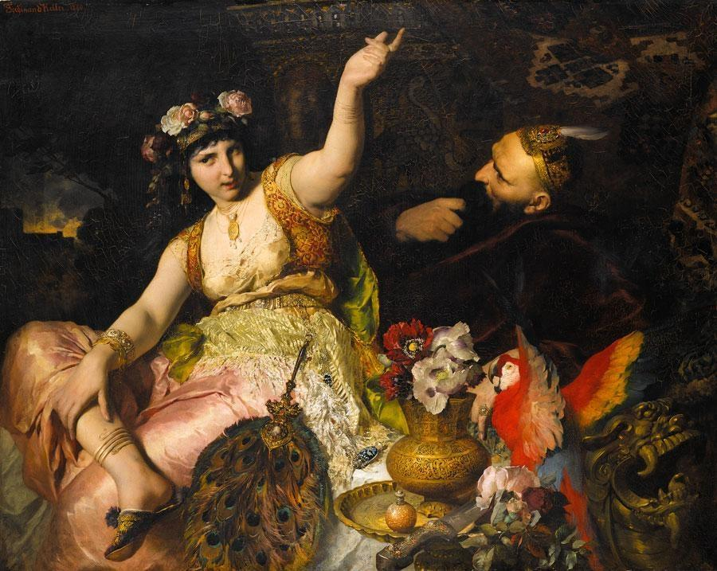
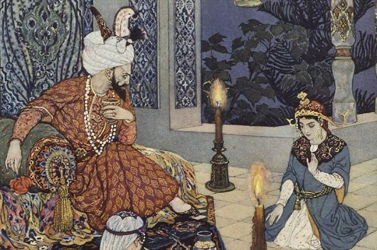

<meta charset="UTF-8">
<link rel="stylesheet" href="css/estilo1.css">
<link rel="stylesheet" href="css/libro1-estilos.css">
<link href="https://fonts.googleapis.com/css2?family=Open+Sans:wght@300;400;600;700&display=swap" rel="stylesheet">

<!-- Fragmento para inyectar en pagina.html (rutas relativas a pagina.html) -->
<article class="libro-detalle">

    <div class="libro-encabezado">
        <h2 class="titulo-seccion">Las mil y una noches</h2>
        <p class="libro-subtitulo">Relato: «El rey Schahriar y su hermano, el rey Schahzaman»</p>
    </div>

    <!-- Portada + ficha técnica -->
    <section class="libro-ficha">
        <figure class="libro-portada">
            
            <figcaption>Ilustración de portada</figcaption>
        </figure>

        <div class="libro-datos">
            <h3>Ficha del relato</h3>
            <ul>
                <li><strong>Nombre original:</strong> ألف ليلة وليلة (<em>Alf layla wa-layla</em>)</li>
                <li><strong>Nombre en español:</strong> Las mil y una noches</li>
                <li><strong>Relato:</strong> El rey Schahriar y su hermano, el rey Schahzaman</li>
                <li><strong>Autoría:</strong> Anónima y colectiva (recopilación de cuentos populares)</li>
                <li><strong>Época:</strong> Reunida entre los siglos VIII y XIV aproximadamente</li>
                <li><strong>Origen:</strong> Medio Oriente</li>
                <li><strong>Género:</strong> Cuento</li>
                <li><strong>Idioma original:</strong> Árabe</li>
            </ul>
        </div>
    </section>

    <!-- Audio -->
    <section class="libro-audio">
        <h3>Escucha la reseña</h3>
        <p>Toda la información de esta página, narrada en audio.</p>
        <audio controls preload="none">
            <source src="audios/las-mil-y-una-noches.mp3" type="audio/mpeg">
            Tu navegador no admite el elemento de audio.
        </audio>
    </section>

    <!-- Personajes -->
    <section class="libro-bloque">
        <h3>Personajes principales</h3>
        <div class="libro-personajes">
            <div class="libro-personaje">
                <h4>Schahriar</h4>
                <p>El rey poderoso que, herido por una traición, decide vengarse.</p>
            </div>
            <div class="libro-personaje">
                <h4>Schahzaman</h4>
                <p>Su hermano menor, rey de Samarcanda, que vive una traición similar.</p>
            </div>
            <div class="libro-personaje">
                <h4>Scheherazade</h4>
                <p>La hija del visir, valiente e inteligente, que enfrenta al rey con sus relatos.</p>
            </div>
            <div class="libro-personaje">
                <h4>Dunyazad</h4>
                <p>La hermana menor de Scheherazade, que la ayuda en su plan.</p>
            </div>
            <div class="libro-personaje">
                <h4>El visir</h4>
                <p>El consejero del rey y padre de Scheherazade.</p>
            </div>
        </div>
    </section>

    <!-- Resumen -->
    <section class="libro-bloque">
        <h3>Resumen</h3>
        <p>El rey Schahriar invita a su hermano Schahzaman a visitar su reino. Poco después de partir, Schahzaman regresa a su palacio por un objeto olvidado y descubre que su esposa lo ha traicionado. Dolido, vuelve a la corte de su hermano, donde su tristeza se hace evidente.</p>
        <p>Schahriar sale de cacería y Schahzaman, desde una ventana, descubre que la reina también engaña al rey. Cuando se lo cuenta, Schahriar lo comprueba por sí mismo. Devastados, los hermanos parten sin rumbo y, en el camino, se encuentran con un genio y una mujer que le ha sido infiel, lo que los convence de que no se puede confiar en nadie.</p>
        <p>Al volver a su reino, Schahriar castiga a su esposa y decide casarse cada noche con una joven distinta y ordenar su muerte al amanecer. Para detener esta crueldad, Scheherazade, hija del visir, se ofrece como esposa. Cada noche le cuenta al rey una historia sin terminar, y él, ansioso por conocer el final, aplaza su muerte día tras día. Así comienzan los relatos que dan vida a la obra.</p>
        <p class="libro-nota">Aviso: este resumen revela la trama principal del relato.</p>
    </section>

    <!-- Enseñanzas -->
    <section class="libro-bloque">
        <h3>3 enseñanzas del relato</h3>
        <ol class="libro-ensenanzas">
            <li>
                <strong>No juzgar a todos por la falla de uno.</strong>
                El dolor de una traición no debe volvernos injustos ni hacernos desconfiar de todas las personas.
            </li>
            <li>
                <strong>La inteligencia y la palabra pueden más que la fuerza.</strong>
                Scheherazade vence la crueldad del rey con ingenio, paciencia y buenas historias.
            </li>
            <li>
                <strong>El valor de ayudar a los demás.</strong>
                Scheherazade arriesga su vida para salvar a otras mujeres, y nos muestra que la valentía también es solidaridad.
            </li>
        </ol>
    </section>

    <!-- Ilustraciones -->
    <section class="libro-bloque">
        <h3>Ilustraciones de la obra</h3>
        <div class="libro-galeria">
            <figure>
                
                <figcaption>Los hermanos reyes</figcaption>
            </figure>
            <figure>
                
                <figcaption>El encuentro con el genio</figcaption>
            </figure>
            <figure>
                
                <figcaption>Scheherazade y el rey</figcaption>
            </figure>
        </div>
    </section>

    <!-- Dónde conseguirlo -->
    <section class="libro-bloque libro-comprar">
        <h3>Dónde conseguir el libro</h3>
        <ul>
            <li>
                <strong>Comprar en librería:</strong>
                <a href="https://porrua.mx/las-mil-y-una-noches-9789700771533.html" target="_blank" rel="noopener">En la libreria Porrúa</a>
            </li>
            <li>
                <strong>Leer gratis (texto en español):</strong>
                <a href="https://www.suneo.mx/literatura/subidas/Anónimo%20Las%20Mil%20y%20Una%20Noches.pdf" target="_blank" rel="noopener">Las mil y una noches</a>
            </li>
        </ul>
    </section>

</article>
